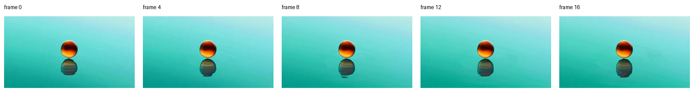

API And CLI¶
MLX-Gen can be used from the command line or embedded in Python applications. The stable public entry point for new command-line usage is mlxgen.
Command-Line Surface¶
Use mlxgen --help to see the command groups:
mlxgen --help
The public workflows are:
| Command | Purpose |
|---|---|
mlxgen generate |
Generate images or supported videos from a downloaded source model or MLX-Gen model package. Image input selects image-to-image or image-to-video when the model supports it. |
mlxgen upscale |
Upscale and restore images or video clips with SeedVR2. |
mlxgen capabilities |
Inspect the public tasks, internal modes, and option support for a model without loading weights. |
mlxgen validation |
Inspect generated-output and benchmark records for exact model/package rows. |
mlxgen download |
Explicitly download model or LoRA files into the local cache. |
mlxgen prepare |
Create a reusable local MLX-Gen model package, optionally quantized, and write a Hugging Face model card. |
The package also installs compatibility entry points from the mflux codebase. New workflows should
prefer the mlxgen commands above when a matching command exists.
Reader-first workflow split:
| You have | You want | Current command |
|---|---|---|
| Only a prompt | A new image or a new video | mlxgen generate |
| One image | Image editing, reframe/outpaint, or Wan first-frame image-to-video | mlxgen generate |
| One to eight reference images | A Bernini reference-guided video | mlxgen generate --model bernini-r-1.3b --reference-image ... |
| One video clip | SeedVR2 restoration or upscale, with no prompt | mlxgen upscale --video-path ... |
| One video clip | Prompt-guided content change | mlxgen generate --model Wan-AI/Wan2.2-T2V-A14B-Diffusers --video-path ... |
| One video plus reference images | A Bernini reference-guided edit | mlxgen generate --model bernini-r-1.3b --video ... --reference-image ... |
That recommendation is especially important for application integrations that shell out to a
subprocess. Use mlxgen generate instead of calling model-family commands such as
mflux-generate-flux2 or mflux-generate-flux2-edit directly. The unified mlxgen surface is
the command contract that MLX-Gen documents, tests, and evolves for integrations.
For a full copy/pasteable workflow that exercises T2I, I2I edit, multi-reference I2I, T2V A14B, and I2V A14B, see Spaceship Snow Workflow. For practical Wan size and runtime examples, see Wan Video. For role-aware reference video, see Bernini-R 1.3B.
Generation Router¶
mlxgen generate chooses the backend from --model, optional --family, and image or video
inputs. Public tasks are media directions: text-to-image, image-to-image, text-to-video,
image-to-video, and video-to-video. Edit/reference behavior is an internal image-to-image mode,
not a separate public task.
mlxgen generate \
--model z-image-turbo \
--prompt "A product photo of a ceramic teapot" \
--output image.png
Inspect a model before generation:
mlxgen capabilities --model flux2-klein-4b
The JSON includes each route-supported public task, internal mode, image count, route handler, and
option support. The payload carries schema_version 11. It reports min_reference_images and
max_reference_images so applications can keep semantic references separate from primary --image
inputs, and the outpaint conditioning-canvas contract described in
Outpaint Conditioning Canvas. Route support
means MLX-Gen knows how to dispatch and validate options; it is not a claim that a model/package
passed visual release QA. Applications can use the same contract from Python through
get_model_capabilities(...) and resolve_generation_plan(...). For custom
repositories or local paths whose name does not identify the architecture, construct the
ModelConfig with the same base-model hint that you would pass to the CLI.
These route helpers cover the unified mlxgen generate families only. SeedVR2 uses mlxgen
upscale on the CLI and direct SeedVR2.generate_image(...) / SeedVR2.restore_video_to_path(...)
in Python.
Qwen structured control is exposed through the same contract. When a capability row reports
supports_control_image=true, the route accepts --controlnet-image-path as a structured guide.
The exact public proof row is AbstractFramework/qwen-image-8bit on qwen.control. That
row also reports the exact sidecar through control_model, and the unified mlxgen generate
router injects that sidecar automatically.
LoRA support is route-specific. Capability rows include supports_lora, lora_status,
lora_target_roles, and lora_validation_profile. Treat only lora_status="validated" rows as
production-supported. mapped-unvalidated means the route has a mapping and strict loader path,
but the exact model/package has not yet passed a visible A/B validation with an accepted adapter.
Generation does not download LoRA files. Download LoRA repositories explicitly, then pass a local
.safetensors file or a cached Hugging Face adapter id. The file part can include a subdirectory
inside the adapter repository:
mlxgen download --model lovis93/Flux-2-Multi-Angles-LoRA-v2 --all-files
mlxgen generate \
--model <compatible-model> \
--prompt "<prompt from the LoRA model card>" \
--lora-paths owner/repo:adapter.safetensors \
--lora-scales 0.9 \
--output with_lora.png
The adapter must match the selected model architecture. For example,
lovis93/Flux-2-Multi-Angles-LoRA-v2 targets black-forest-labs/FLUX.2-dev; MLX-Gen currently
supports FLUX.2 Klein 4B/9B, so that adapter is rejected for Klein routes. The number of
--lora-scales values must match the number of --lora-paths values exactly. See
LoRA for the source/no-LoRA/with-LoRA validation method.
Wan video LoRA is route-specific. Exact validated q8 rows exist
for TI2V-5B text-to-video, TI2V-5B first-frame image-to-video, T2V-A14B text-to-video, and
I2V-A14B first-frame image-to-video. A14B requests still require explicit
high_noise_transformer / low_noise_transformer role assignment when you pass separate adapter
files. For the current A14B fast path, download lightx2v/Wan2.2-Lightning with
mlxgen download --model lightx2v/Wan2.2-Lightning --all-files, then use the paired T2V or I2V
files shown in LoRA. After download, you can reference those paired files either with
the public repo:subdir/file.safetensors form or with absolute local file paths. For A14B, each
file must be its own --lora-paths argument. Bonsai remains a separate fail-closed case because
its packed ternary runtime does not expose standard replaceable linear-module targets.
Most image and video backends accept a negative prompt. In the unified CLI,
--negative-prompt and --negative are aliases. Python callers pass the same value as
negative_prompt=... on the model-specific generation method.
FLUX.2 is the important exception: FLUX.2 Klein routes do not accept --negative-prompt. Use the
positive prompt to describe the target result and omit the negative prompt entirely for FLUX.2
generation and FLUX.2 image-conditioned edit runs.
Use mlxgen validation when you need exact release evidence for a model/package:
mlxgen validation --model AbstractFramework/qwen-image-edit-2509-8bit
mlxgen validation --model bernini-r-1.3b
This returns the current validation profile rows with status, prompt, source image(s), artifact
path, and reviewer notes. Route support and visual validation are intentionally separate:
mlxgen capabilities --model briaai/Fibo-Edit exposes no unified public generation capability,
while mlxgen validation --model AbstractFramework/qwen-image-edit-2511-8bit reports the
published Qwen 2511 edit proof rows.
The Bernini profile reports three experimental BF16 video routes from the historical schema-v3
bundle and links each failed row to its playable MP4. Its overall status is FAIL for that
bounded bundle. Accepted official public 1.3B example proof with full prompts and contact sheets
lives in docs/assets/validation/bernini-r-1.3b-2026-08-11/. The unmeasured official
848x480x81 profile is not implied.
For LoRA routes, pass the exact lora_validation_profile value surfaced by mlxgen capabilities
when you want the accepted proof row for that route:
mlxgen validation \
--model AbstractFramework/qwen-image-edit-8bit \
--profile lora_qwen_edit_q8_ghibli_edit_2026_06_11
Runtime Memory Defaults¶
MLX-Gen applies two machine-derived runtime-memory behaviors by default. Both are visible, bounded, and overridable.
| Behavior | Default | Override |
|---|---|---|
| MLX buffer-cache limit | When no limit is set, model load applies total RAM / 8, clamped to [1 GiB, 8 GiB], once per process. One stderr line names the applied cap. Low-RAM mode keeps its 1 GB default. A pre-existing limit at or below half of physical RAM (set by a host through mx.set_cache_limit) is treated as deliberate, preserved, and announced instead. |
--mlx-cache-limit-gb <gb> on CLIs, MFLUX_MLX_CACHE_LIMIT_GB=<gb> for Python-API hosts. Pass -1 for explicitly unlimited. Precedence: CLI flag > env var > low-RAM default > machine ladder. |
| Weight prefetch at load | Weight files loaded from HF-repo layouts are sequentially read into the OS page cache before use, so page-cold weights fault in at sequential SSD speed instead of random-access speed. Prepared MLX-Gen packages are not prefetched — they are written in module-tree order and materialize near-sequentially on their own (a prefetch measurably slowed their cold loads). Already-resident files are detected (mincore) and skipped; the prefetch is skipped entirely when the files exceed half of physical RAM (protects low-RAM machines from page-cache thrash). |
MFLUX_NO_WEIGHT_PREFETCH=1 disables it. |
The buffer-cache limit bounds only the FREE cache (reclaim happens at the next allocation);
resident weights and in-flight activations are unaffected. Hosts that manage
mx.set_cache_limit themselves are detected and left alone (see table); exporting
MFLUX_MLX_CACHE_LIMIT_GB=-1 (or their own value) remains the explicit way to pin the
behavior.
CLI Runtime Events¶
Use --json-events on mlxgen generate and mlxgen upscale when an application needs a
machine-readable runtime stream. In that mode, JSONL events are written to stdout and human CLI
text moves to stderr.
Each event includes the authoritative routed command/model identity plus step-based progress
fields. Events carry resolved output facts when the route knows them: Wan start events include
the resolved width/height (final canvas after policy/multiple resolution), and video save
events add fps, width, height, and total_frames so hosts can skip a metadata probe decode.
Unknown fields may be added over time; consumers should ignore fields they do not recognize.
Terminal events also include saved-artifact paths, and failure events include
diagnostics_path when the route writes a failure manifest. When MLX-Gen can provide actionable
next steps, failed events also include a nested remediation object. DownloadRequiredError
emits kind=download-required with download_command and optional prepare_command; CLI usage
failures under --json-events emit kind=cli-usage with the relevant usage string.
For image routes, model progress complete means the in-memory image object is ready. The CLI
maps that to generated, then emits save and reserves terminal complete for the point where
the output file has actually been written. Wan video routes also accept --failure-diagnostics;
non-Wan mlxgen generate routes do not advertise or accept that flag.
Multiple Outputs¶
The public CLI uses seeds as the shared multi-output contract.
mlxgen generateaccepts one or more explicit seeds through--seed.mlxgen generatealso accepts--auto-seeds Nfor image routes and Wan video routes.mlxgen upscaleaccepts one or more explicit seeds through--seedand--auto-seeds N.- Each seed produces one saved image or one saved video.
- Duplicate explicit seeds are rejected because they would target the same artifact path.
--auto-seedsmust be greater than zero.
When one invocation processes several seeds, MLX-Gen appends _seed_<seed> to the output stem
automatically unless your --output pattern already contains {seed}.
Examples:
mlxgen generate \
--model qwen-image \
--prompt "A clean studio product photo" \
--seed 101 202 303 \
--output product.png
This writes product_seed_101.png, product_seed_202.png, and product_seed_303.png.
mlxgen generate \
--model Wan-AI/Wan2.2-T2V-A14B-Diffusers \
--prompt "A cinematic shot of mist rolling across a teal mountain lake" \
--seed 101 202 \
--output lake.mp4
This writes lake_seed_101.mp4 and lake_seed_202.mp4.
mlxgen upscale can also process several source files in one invocation. When that happens, MLX-Gen
appends the source-file stem automatically so each saved artifact gets its own path:
mlxgen upscale \
--model seedvr2-3b \
--video-path clip_a.mp4 clip_b.mp4 \
--seed 11 22 \
--output restored.mp4
This writes restored_seed_11_clip_a.mp4, restored_seed_22_clip_a.mp4,
restored_seed_11_clip_b.mp4, and restored_seed_22_clip_b.mp4.
--output supports {seed} everywhere. SeedVR2 multi-source runs also support {input_name}:
mlxgen upscale \
--model seedvr2-3b \
--video-path clip_a.mp4 clip_b.mp4 \
--seed 11 22 \
--output "restored_{input_name}_{seed}.mp4"
Legacy {image_name} is still accepted as a compatibility alias. If two SeedVR2 source files
share the same basename, keep --replace false or rename the inputs; overwrite-prone batches are
rejected when --replace true.
For Python integrations on the unified mlxgen generate families, use
load_generation_model(...).generate_outputs(...) for the same serial multi-output reuse
contract. SeedVR2/upscale remains outside that wrapper and stays on direct SeedVR2 methods.
Image Metadata And Finalization¶
The default image save path is intentionally lightweight: MLX-Gen writes the image once and does not embed runtime-memory diagnostics into the image file by default.
Use --metadata to write a .metadata.json sidecar. That sidecar is the default place where
runtime-memory metadata is recorded. Use --embed-metadata only when you explicitly want image
metadata embedded into the saved PNG/JPEG/TIFF artifact and accept the extra finalization work.
Both the sidecar and embedded metadata carry metadata_schema_version (currently 2).
Evolution is additive-only: new optional fields may appear without a version bump; the version
increments only if a field's meaning changes or a field is removed. Version 2 renamed the
0.21.0 masked-edit key masked_warm_start_strength to mask_strength;
--config-from-metadata reads both spellings. Consumers should ignore unknown fields and
check this version, not mflux_version (which identifies the producing package release, not
the metadata structure).
Image-To-Image Modes¶
image-to-image is one public task with several internal modes. Use mlxgen capabilities --model
<model> to see which modes a selected model exposes, and use --i2i-mode when you need to force a
specific path.
For a plain-language guide to what each mode is good at, see Image Edit Modes. For the current Qwen route map, see Qwen route matrix.
| Goal | Internal mode | Inputs | Selection rule | Uses --image-strength? |
|---|---|---|---|---|
| Whole-image variation or restyle from a source image | latent-img2img |
exactly one image | pass --image-strength or --i2i-mode latent on a model that supports latent I2I |
Yes |
| Instruction edit, object/layout change, or composition-preserving style edit | edit-reference |
one image | default for FLUX.2 and dedicated edit checkpoints when one image is supplied without --image-strength; or pass --i2i-mode edit |
No |
| Localized masked edit / inpaint | edit-reference with mask support |
one image + one mask | pass --mask-path on a model that supports masked edit or inpaint |
No |
| Reference composition from several images | multi-reference |
two or more images | repeat --image on a model that supports multi-reference I2I; or pass --i2i-mode multi-reference |
No |
| Generative reframe / zoom-out | edit-reference with reframe support |
one image | pass --reframe-padding on a model whose capability has supports_reframe=true |
No |
| Backend-specific outpaint | edit-reference with outpaint support |
one image | pass --outpaint-padding on a model whose capability has supports_outpaint=true; add --outpaint-fill where the capability has supports_outpaint_fill=true |
No |
Structured Control Images¶
Structured control is adjacent to image editing, but it is not an image-to-image route. It is a
text-to-image route guided by a control image. The control image is supplied with
--controlnet-image-path, and the selected capability must report supports_control_image=true.
Current exact public proof exists for:
AbstractFramework/qwen-image-8bitonqwen.control- sidecar injected by the unified router:
InstantX/Qwen-Image-ControlNet-Union:diffusion_pytorch_model.safetensors
Important workflow boundary:
--imagemeans source-image generation or editing;--controlnet-image-pathmeans structured text-to-image control.
The structured-control route still does not combine --controlnet-image-path with --image. If
you need source-image editing on the exact base-Qwen row, use --image + --mask-path instead so
the router can select qwen.control-inpaint and inject the exact inpainting sidecar. For the
accepted proof artifacts for these Qwen rows, see Image Edit Capabilities,
Qwen localized editing, and Qwen route matrix.
On the exact base-Qwen control routes, unified mlxgen generate also accepts
--controlnet-strength. On qwen.control-inpaint, --controlnet-model is only accepted when it
matches the exact inpainting sidecar that the route already validates and injects.
Example:
mlxgen generate \
--model AbstractFramework/qwen-image-8bit \
--prompt "Aesthetics art, traditional asian pagoda, elaborate golden accents, sky blue and white color palette, swirling cloud pattern, digital illustration, east asian architecture, ornamental rooftop, intricate detailing on building, cultural representation." \
--negative "blurry, low quality, distorted, deformed, text, watermark, ugly" \
--width 576 \
--height 864 \
--steps 4 \
--guidance 1 \
--seed 5802 \
--controlnet-image-path canny.png \
--lora-paths lightx2v/Qwen-Image-Lightning:Qwen-Image-Lightning-4steps-V2.0-bf16.safetensors \
--lora-scales 1 \
--output controlled.png
Use latent img2img when you want a whole-image variation driven by source-image noise injection:
restyle the whole scene, change the mood, or make a loose variation. Higher --image-strength
adds more noise, allows more change, and runs more effective denoise steps. Lower values stay
closer to the encoded source image.
Use edit/reference I2I when the prompt is an instruction: remove an object, change an object color,
turn a scene into a pencil sketch while preserving layout, reposition or reshape a subject, or keep
the composition stable. Edit/reference and multi-reference routes use the image(s) as conditioning
or references, so --image-strength is rejected before loading weights.
When a capability row supports masked edit or inpaint, that row accepts --mask-path for
localized masked edit or inpaint. White mask pixels are repainted and black mask pixels are
preserved, and --image-strength is rejected together with --mask-path. Masked routes exist
for Qwen edit models (qwen.inpaint), base Qwen models (qwen.base-inpaint natively, or
qwen.control-inpaint with the auto-injected InstantX sidecar on the exact
AbstractFramework/qwen-image-8bit row), Z-Image Turbo (z-image.inpaint; non-turbo masked
requests are rejected for the moment after measured geometry failures), and FLUX.2 Klein
distilled and base (flux2.inpaint, with optional masked-area reference images on the backend
command and Python API).
The user request shape is the same, but the backend route is not: the same
--image + --mask-path + --prompt request selects whichever masked route the exact row
carries. Native base-Qwen masked edit warm-starts from the re-noised source and records the
applied mask_strength plus executed effective_steps in metadata; --mask-strength
(default 0.85, raise toward 0.95 for content-replacing edits) tunes that warm start, while
the other masked routes denoise the full schedule. Use mlxgen capabilities --model ... to
confirm which exact masked route a selected row supports, and see
Masked editing for the full model matrix, per-family behavior, and proof
grades. Without --mask-path, the same route may behave like a global edit or a latent
variation, depending on the selected capability.
In auto mode, the selected model's default capability wins. FLUX.2 routes one image to
edit-reference, supports latent I2I when --image-strength is supplied, and supports
multi-reference I2I with two or more images. The original Qwen/Qwen-Image-Edit checkpoint is a
single-reference edit model in MLX-Gen. Use it for one-source semantic or appearance edits such as
pencil sketch, object-state changes, style changes, and layout-preserving instruction edits. Qwen
Image Edit 2509 and 2511 expose multi-reference edit routes through unified
mlxgen generate when a package supports that route. The validation command records which exact
source model or MLX-Gen optimized package rows passed visual review. The reframe/outpaint
validation profile covers Qwen Image Edit, Qwen Image Edit 2509/2511, and FLUX.2 Klein
4B/9B source/q8/q4 rows.
Latent-only image models such as ERNIE Image Turbo, Z-Image, and base Qwen Image require explicit
--image-strength for latent-img2img. Base FIBO exposes text-to-image through unified
mlxgen generate. FIBO Edit is not exposed as a public mlxgen generate capability until it has
passing source-model and optimized-variant visual proof; use the dedicated FIBO Edit command only for
experimental parity work.
Image-To-Image Canvas Policy¶
Ordinary image-to-image defaults to --canvas-policy source-aspect. The first input image defines
the output aspect ratio for latent img2img, edit/reference I2I, and multi-reference I2I. --width
and --height are treated as a size target, then MLX-Gen chooses the nearest model-compatible
canvas that preserves the source ratio. For multi-reference I2I, the first --image is the
geometry anchor and later images are references.
Use --canvas-policy exact-resize only when you intentionally want the requested output canvas
exactly. Exact resize can reshape or recompose the source and is not a substitute for outpainting.
Generated image metadata records canvas_policy, requested dimensions, source-image dimensions,
and final width/height when an image input is used.
--resize-mode is orthogonal to --canvas-policy: the policy picks the output canvas, the mode
picks how source pixels map onto it. resize stretches the source to fill the canvas (default),
crop center-crops it to fill without distortion, and pad letterboxes the full source onto the
canvas without distortion (black bars). The flag exists on the latent image-to-image family
commands (Qwen including native masked edit, FLUX.2 Klein, Z-Image including native inpaint,
ERNIE, FIBO, FLUX.1) and on the Wan video route; edit/reference, controlnet, and outpaint routes
keep reference-pinned resize geometry and reject the flag loudly. Masks (inpaint and video masks)
always map through the same geometry as the source pixels; letterbox borders binarize to
"preserved". Metadata records resize_mode next to canvas_policy.
For instruction/reference image-to-image, pass one or more input images to an edit-capable model:
mlxgen generate \
--model AbstractFramework/qwen-image-edit-2509-8bit \
--image input.png \
--prompt "Turn the room into a pencil sketch" \
--negative "color, blur, crop, text, watermark" \
--output edited.png
For latent image-to-image variation, use a model that supports latent-img2img and pass
--image-strength. --image-strength is rejected for edit/reference and multi-reference modes
because those paths use source/reference images as conditioning rather than noising the source
latent:
mlxgen generate \
--model AbstractFramework/flux.2-klein-4b-8bit \
--image input.png \
--i2i-mode latent \
--canvas-policy source-aspect \
--image-strength 0.4 \
--prompt "Make the scene more cinematic" \
--output variation.png
--task edit remains accepted as a compatibility alias for
--task image-to-image --i2i-mode edit, but new commands and integrations should prefer
--i2i-mode.
Generative reframe is available through --reframe-padding for edit models that advertise
supports_reframe=true in mlxgen capabilities. It asks the edit model to generate a larger view
from one source image. Padding accepts CSS-style values in top,right,bottom,left order. MLX-Gen
builds a larger conditioning canvas with the source pasted at that offset, then asks the edit model
to generate the larger view:
mlxgen generate \
--model AbstractFramework/flux.2-klein-4b-8bit \
--image input.png \
--reframe-padding "15%,35%,15%,35%" \
--prompt "Generatively reframe this image into a wider view. Keep the subject fully visible and extend the background naturally." \
--steps 16 \
--seed 42 \
--output reframed.png
This is a generative edit workflow. It may redraw source content, and the prompt still controls where the model places or reconstructs the subject. Use it for zoom-out, background extension, or revealing plausible missing object boundaries.
Backend-specific outpaint is available for routes that advertise supports_outpaint=true. Use
--outpaint-padding when you want MLX-Gen to build an expanded canvas and guide an edit model to
fill the larger view. Padding takes CSS-style values in top,right,bottom,left order and each side
is independent, so one call can extend a single side, both sides of an axis, or all four at
different depths; 0 leaves that edge where it is:
mlxgen generate \
--model black-forest-labs/FLUX.2-klein-base-9B \
--image input.png \
--outpaint-padding "5%,80%,5%,60%" \
--prompt "Outpaint this close crop into a wider realistic shot. Complete the missing background and subject outside the original frame." \
--steps 20 \
--guidance 4 \
--seed 42 \
--output outpaint.png
Outpaint is backend-specific, and each route publishes which strategy it uses as
outpaint_preservation. Qwen Image Edit variants create a larger temporary canvas, initialize the
new area with edge-extended source context, and paste the original crop back only when the
generated source window remains close enough to it
(adaptive-content-aware-source-blend). FLUX.2 Klein strict outpaint is different: it uses
source-locked denoising with a narrow latent transition band and never repaints the source region
afterwards (latent-locked-transition-band-no-postblend). Every Klein model runs it, distilled
4B/9B at guidance 1.0 and base 4B/9B at guidance 4.0; omit --guidance and each takes its own
default. Reframe and Outpaint runs every supported
route on one source and publishes the per-route timings and source drift, and
Expanding On Any Side runs three source aspect ratios
through eight padding configurations covering every single side and every axis combination; further
proof is in
Image Edit Capabilities.
Neither strategy is a native fill/inpaint pipeline that receives an explicit diffusion mask, and
neither is an exact pixel-lock guarantee. On the latent-locked FLUX.2 Klein route the source region
is decoded from latents, so it is reproduced rather than preserved bit-for-bit; on the adaptive
Qwen route the paste is conditional, so it applies only while the generated source window still
matches. Use masked editing (--mask-path, see Masked editing) when a region
must stay untouched. MLX-Gen keeps lower-level FLUX.1 Fill support separate from the unified
edit-reference canvas route. Z-Image, ERNIE, FIBO, base Qwen Image, Qwen Image 2512, latent I2I
routes, video routes, and SeedVR2 reject --outpaint-padding before loading weights.
--outpaint-padding computes --width and --height from the source image and the padding and
runs the canvas at exact-resize, so it rejects --width, --height, and --canvas-policy. It
also cannot be combined with --reframe-padding or --mask-path.
Outpaint Conditioning Canvas¶
Outpaint pastes the source onto a larger canvas and asks the model to complete the added area. What
fills that area before denoising is selectable on routes that advertise
supports_outpaint_fill=true, which is the FLUX.2 Klein outpaint route. The Qwen edit backend
takes no fill option and always builds an edge-extended canvas.
| Option | Behavior |
|---|---|
--outpaint-fill |
How --outpaint-padding fills the expanded conditioning canvas: auto (default), edge, neutral, solid, or blur. edge stretches the source border strip outward, which continues an existing texture across the padding. neutral paints a flat per-side border color sampled from the source, which leaves nothing to continue so the model generates new subject matter, with no hard color step at the seam. solid paints one flat color. blur paints a blurred, scaled copy of the source. auto keeps edge while every padded side stays within the depth the border strip covers (the edge-fill reach), switches to neutral past that, and switches to solid green when a green-border outpaint adapter is loaded, because those adapters are trained to paint into a pure-green canvas. Requires --outpaint-padding. Recorded in metadata and replayed by --config-from-metadata. |
--outpaint-fill-color |
The color for --outpaint-fill solid, as R,G,B (0-255 per channel) or #rrggbb. edge, neutral, and blur derive their canvas from the source and ignore it. Without it, solid uses 0,255,0 when a green-border outpaint adapter is loaded and the source's mean border color otherwise. Requires --outpaint-padding. Recorded in metadata and replayed by --config-from-metadata. |
Every outpaint run prints the resolved canvas to stderr before denoising, and names the reason when
auto chose the mode:
Outpaint: fill=neutral, canvas 928x1536 from source 768x766, padding top=0 right=76 bottom=766 left=76.
Outpaint: --outpaint-fill auto selected neutral because the deepest padding is bottom 766px (100% of
the source height), 2.0x the 384px edge-fill reach; a blank canvas makes the model generate new
subject matter instead of smearing the source border.
Applications can read the same contract as JSON without running a job. Capability rows carry:
| Field | Meaning |
|---|---|
supports_outpaint_fill |
Whether the route accepts --outpaint-fill and --outpaint-fill-color. false with a single-entry outpaint_fill_modes means the fill algorithm is fixed. |
outpaint_fill_modes |
The fill modes the route accepts. Empty when supports_outpaint is false. |
outpaint_default_fill_mode |
The mode that runs when --outpaint-fill is omitted. |
outpaint_auto_edge_fill_max_stretch |
With outpaint_default_fill_mode auto: the largest stretch edge fill is allowed to apply to the sampled border strip. Padding past that switches auto to a blank canvas. |
outpaint_recommended_lora |
The adapter measured to give the best outpaint results on that exact route, or null. Published per route: a row carries a recommendation only where an A/B proof for that row exists. Optional, not required: the route runs without it. |
outpaint_preservation |
How the route keeps the source pixels: latent-locked-transition-band-no-postblend locks the source region during denoising and never repaints it afterwards; adaptive-content-aware-source-blend generates the whole canvas and pastes the source back while the generated source window still matches it. The same string is recorded in the generated artifact's metadata. |
outpaint_validated_padding, outpaint_validated_fill_mode, outpaint_validated_max_canvas_pixels |
The release-validation envelope: the padding, fill mode, and canvas size the published proof runs used. Also published per route, so a row states its own evidence. Outside the envelope, outpaint is supported but unvalidated. |
For example, AbstractFramework/flux.2-klein-base-4b-8bit reports flux2.outpaint with
supports_outpaint_fill: true, outpaint_fill_modes: ["auto", "edge", "neutral", "solid", "blur"],
outpaint_default_fill_mode: "auto", outpaint_auto_edge_fill_max_stretch: 12.0,
outpaint_recommended_lora: "fal/flux-2-klein-4B-outpaint-lora", and
outpaint_preservation: "latent-locked-transition-band-no-postblend".
AbstractFramework/flux.2-klein-4b-8bit and AbstractFramework/flux.2-klein-9b-8bit report the
same flux2.outpaint contract with outpaint_recommended_lora: null, because the green-canvas
adapter's A/B proof is a base row.
AbstractFramework/qwen-image-edit-2511-8bit reports qwen.outpaint with
supports_outpaint_fill: false, outpaint_fill_modes: ["edge"],
outpaint_default_fill_mode: "edge", and
outpaint_preservation: "adaptive-content-aware-source-blend". All three publish the same validated
envelope: outpaint_validated_padding: "5%,80%,5%,60%", outpaint_validated_fill_mode: "edge", and
outpaint_validated_max_canvas_pixels: 282880.
A route with supports_outpaint_fill: false has one legal canvas, the mode named by
outpaint_default_fill_mode. Ask it for a different one and mlxgen generate refuses before
dispatch, naming the capability and the fixed canvas:
mlxgen generate: error: qwen.outpaint has a fixed 'edge' conditioning canvas and does not accept
an outpaint fill mode ('neutral' was requested).
Generated metadata records the resolved canvas next to outpaint_padding, so
--config-from-metadata replays the resolved fill instead of re-running auto: outpaint_fill,
outpaint_fill_color, outpaint_fill_requested, outpaint_fill_reason,
outpaint_edge_fill_reach_px, and outpaint_edge_fill_overreach.
Example, naming the fill explicitly:
mlxgen generate \
--model AbstractFramework/flux.2-klein-base-4b-8bit \
--image portrait.png \
--outpaint-padding "0%,10%,100%,10%" \
--outpaint-fill neutral \
--prompt "Extend this portrait downward to reveal the lower part of the body: the same subject in the same clothing, same lighting, same background." \
--steps 20 \
--guidance 4 \
--seed 1234 \
--output extended.png
See Reframe and Outpaint for padding guidance, the published proof, and the recommended adapter, and Outpainted Area Continues The Border Texture Instead Of Adding New Content when the added area returns as stretched border texture.
Negative Prompts¶
Use --negative-prompt or the shorter --negative alias to describe what the model should avoid:
mlxgen generate \
--model AbstractFramework/qwen-image-edit-8bit \
--image input.png \
--prompt "Convert the scene into a clean graphite pencil sketch while preserving layout" \
--negative "color, blur, crop, text, watermark" \
--steps 30 \
--guidance 4 \
--output sketch.png
For Qwen image edit, guidance above 1 uses true classifier-free guidance when a negative prompt
is present. If you omit the option, MLX-Gen uses the official blank negative-prompt behavior for
Qwen edit models, so true CFG remains enabled by default. Passing an explicit negative prompt is
still useful for blocking concrete failure modes such as crop, blur, text, intact object state, or
unwanted color.
For FLUX.2 Klein, omit the negative prompt entirely. FLUX.2 routes do not support
--negative-prompt in MLX-Gen.
For Wan, omitting the option uses the model's official default negative prompt. Pass
--negative "" or --negative-prompt "" to intentionally run without a negative prompt.
Supported router families are qwen, flux2, bonsai, fibo, z-image, ernie-image, and wan:
mlxgen generate \
--model ./models/qwen-image-8bit \
--family qwen \
--prompt "A clean studio product photo"
Use --config-from-metadata / -C when you want the router to read fields such as model, image_path, or image_paths from an existing metadata file.
Bonsai Image routes through the same text-to-image command surface. The supported ternary
checkpoint is already low-bit packed, so omit --quantize:
mlxgen generate \
--model prism-ml/bonsai-image-ternary-4B-mlx-2bit \
--prompt "A bonsai tree in a quiet ceramic studio, soft morning light" \
--width 1024 \
--height 1024 \
--steps 4 \
--guidance 1 \
--seed 42 \
--output bonsai.png
Bonsai is text-to-image only in MLX-Gen. Image input, negative prompts, and --quantize are
rejected before model execution. Bonsai LoRA is also rejected today: the packed ternary runtime does
not expose the ordinary replaceable linear-module boundary that MLX-Gen's current LoRA loader
requires.
ERNIE Image Turbo routes through the same command surface:
mlxgen generate \
--model baidu/ERNIE-Image-Turbo \
--prompt "A clean product photo of a ceramic mug" \
--width 512 \
--height 512 \
--steps 8 \
--guidance 1 \
--output image.png
ERNIE Image Turbo supports BF16 source weights plus MLX-Gen q8/q4 optimized packages. MLX-Gen also provides single-image latent image-to-image for ERNIE:
mlxgen generate \
--model baidu/ERNIE-Image-Turbo \
--image input.png \
--prompt "Turn the scene into a pencil sketch" \
--width 512 \
--height 512 \
--steps 8 \
--guidance 3 \
--image-strength 0.25 \
--output edited.png
ERNIE image-to-image accepts exactly one input image. Multi-image edit is not supported. --image-strength follows latent img2img denoising semantics: higher values add more noise and allow more transformation, while lower positive values stay closer to the encoded source image.
For ERNIE image-to-image, the default source-aspect canvas policy preserves the input ratio while
using --width and --height as a size target. Use roughly --image-strength 0.25 to 0.35 for
visible stylization, 0.45 to 0.6 for stronger source preservation, and 12-16 steps when the
output needs more polished stylization. Use Qwen Image Edit for single-image instruction edits when
source layout matters, and use FLUX.2 when the workflow needs validated multi-reference composition.
ERNIE's optional Prompt Enhancer is available with --use-prompt-enhancer when the full source snapshot is present. The default mlxgen download --model baidu/ERNIE-Image-Turbo command downloads only generation components; run mlxgen download --model baidu/ERNIE-Image-Turbo --all-files before using Prompt Enhancer. ERNIE q8/q4 MLX-Gen packages created by mlxgen prepare do not include Prompt Enhancer files.
ERNIE LoRA support is route-specific. The public q8 route
AbstractFramework/ernie-image-turbo-8bit now has exact validated anime-style text-to-image and
latent img2img LoRA rows. Check mlxgen capabilities --model ... before relying on a specific
ERNIE LoRA workflow.
Wan LoRA support is also route-specific. Exact validated q8 rows now exist for TI2V-5B
text-to-video, TI2V-5B first-frame image-to-video, T2V-A14B text-to-video, and I2V-A14B
first-frame image-to-video. Wan uses explicit target roles: transformer for TI2V-5B, and
high_noise_transformer plus low_noise_transformer for A14B routes.
Wan2.2 routes through the same command surface for video generation. TI2V-5B is the smaller text-to-video and first-frame image-to-video path:
mlxgen generate \
--model Wan-AI/Wan2.2-TI2V-5B-Diffusers \
--prompt "A short cinematic video of a glowing orange glass sphere floating above teal water" \
--width 1280 \
--height 704 \
--frames 121 \
--steps 50 \
--guidance 5 \
--fps 24 \
--output video.mp4
T2V-A14B uses the larger two-transformer Diffusers path. --guidance-2 is an optional
Diffusers-compatible low-noise-stage override. With no guidance flags, MLX-Gen uses the model's
two-stage defaults (4 high-noise and 3 low-noise for T2V-A14B). If you set --guidance and
omit --guidance-2, the low-noise stage follows --guidance:
mlxgen generate \
--model Wan-AI/Wan2.2-T2V-A14B-Diffusers \
--prompt "A cinematic shot of mist rolling across a teal mountain lake" \
--width 1280 \
--height 720 \
--frames 81 \
--steps 40 \
--guidance 4 \
--guidance-2 3 \
--fps 16 \
--output video.mp4
TI2V-5B image-to-video uses the same command with one input image:
mlxgen generate \
--model Wan-AI/Wan2.2-TI2V-5B-Diffusers \
--image input.png \
--prompt "A slow cinematic camera move from the input frame" \
--width 1280 \
--height 704 \
--frames 121 \
--steps 50 \
--guidance 5 \
--fps 24 \
--output video.mp4
A14B I2V uses the separate Wan-AI/Wan2.2-I2V-A14B-Diffusers snapshot and the Diffusers
concatenated image-condition latent path:
mlxgen generate \
--model Wan-AI/Wan2.2-I2V-A14B-Diffusers \
--image input.png \
--prompt "A cinematic flyby around the subject in the input image" \
--width 1280 \
--height 720 \
--frames 81 \
--steps 40 \
--guidance 3.5 \
--fps 16 \
--output video.mp4
The TI2V-5B I2V path follows Diffusers first-frame latent conditioning: the first frame is VAE-encoded, kept active through denoising with a timestep mask, and reinserted before decode. The separate A14B I2V model uses concatenated image-condition latents instead. Multi-image/video interpolation is not enabled.
For Wan image-to-video, saved metadata records the requested dimensions, the source image dimensions, and the resolved output dimensions.
For Wan video-to-video, saved metadata records the requested steps (so
--config-from-metadata replays the same schedule) plus effective_steps, video_strength,
high_noise_stage_skipped, source_video_resampled, and the source clip's dimensions, frame
count, duration, fps, and audio presence. The source is resampled onto the --fps timeline at
decode (--frames 17 --fps 16 always consumes the first 1.06 s of the source at real-time
speed); matching fps passes frames through untouched. Source audio is copied onto the saved
output best-effort and the outcome is recorded as audio_copied / audio_copy_mode /
audio_copy_reason in the sidecar.
Bernini Role-Aware Video¶
bernini-r-1.3b routes the official ByteDance 1.3B renderer through the Wan backend with three
distinct input contracts:
This surface is experimental. Its numerical/runtime contracts pass, and seven official public
1.3B example rows plus ads2v at mid profile are qualitatively accepted with committed proof in
docs/assets/validation/bernini-r-1.3b-2026-08-11/. The historical schema-v3 release bundle still
fails at the bounded 17-frame profile. Use these commands for diagnosis and development, not
production output.
# R2V: one to eight ordered references, no source video.
mlxgen generate --model bernini-r-1.3b \
--reference-image subject.png --reference-image garment.png \
--prompt "Animate image0 wearing the garment from image1" \
--low-ram --metadata --output referenced.mp4
# RV2V: one source video plus one to eight ordered references.
mlxgen generate --model bernini-r-1.3b \
--video source.mp4 --reference-image garment.png \
--prompt "Replace the outer garment with image0 and preserve the source person and scene" \
--low-ram --metadata --output reference_edit.mp4
# V2V: one source video and no references.
mlxgen generate --model bernini-r-1.3b \
--video source.mp4 --prompt "Add a snowman beside the path" \
--low-ram --metadata --output video_edit.mp4
Defaults are 848x480, 81 frames, 16 fps, 40 steps, flow shift 5, UniPC, text guidance 4,
reference guidance 4.5, source guidance 1.25, and maximum condition side 848. The hard condition
cap is 1280, the reference count cap is eight, and the prompt cap is exactly 512 UMT5 tokens.
Video-source modes accept only source-aspect plus resize; R2V honors its requested canvas.
On Bernini RV2V/V2V, width and height are a source-aspect area target capped by
--max-condition-size, while frames is a maximum capped by source duration. The start event and
saved metadata expose the resolved canvas and actual output_frames.
Bernini rejects --quantize, LoRA, --video-strength, --video-mask-path, --guidance-2,
explicit denoising grids, non-UniPC solvers, first/last/context/SVI conditioning, and ordinary
--image inputs. --reference-image is a separate semantic role and must not be rewritten as
the first frame. Metadata records ordered paths, condition shapes/source IDs, guidance activity,
system/effective prompts, component-source revisions, and output health. See
Bernini-R 1.3B for memory measurements and playable proof.
Wan Video Parameters¶
Wan uses frame-count control rather than a separate duration flag. The output duration is:
duration_seconds = frames / fps
At the default 24 fps, --frames 121 produces about 5.04 seconds of video, --frames 73 produces about 3.04 seconds, and --frames 49 produces about 2.04 seconds.
Bernini source-video modes are the exception to an exact requested count: --frames is a maximum,
and the source duration plus requested fps may resolve fewer 4n+1 frames. Use
actual_duration_seconds = output_frames / fps from the returned artifact or metadata.
| Option | Behavior |
|---|---|
--width, --height |
Accepted values are model-specific. Text-to-video and video-to-video values are adjusted up to the selected Wan VAE/patch multiple. For image-to-video, these values are a size target by default: MLX-Gen resolves the final canvas from the source image aspect ratio and the selected model's spatial multiple before conditioning the model (see --canvas-policy). Bernini source-video modes also treat them as a size target and preserve the source aspect ratio. |
--canvas-policy |
How the output canvas is resolved from a source input. Default keeps each route's behavior: image-to-video resolves a source-ratio canvas near the requested size; text/video-to-video honor the requested (multiple-adjusted) canvas. exact-resize honors the requested canvas on image-to-video, with the source mapped per --resize-mode; source-aspect on video-to-video derives a source-ratio canvas from the clip. Bernini source-video modes require source-aspect; its reference-only R2V mode has no source canvas. Recorded in metadata and replayed by --config-from-metadata. With --json-events, the start event carries the resolved width/height. |
--resize-mode |
How source pixels (image-to-video first frame, video-to-video frames, VACE conditioning, and their masks) map onto the canvas: resize stretches to fill (default), crop center-crops without distortion, pad letterboxes the full source without distortion (black bars). Masks always follow the same geometry as the source pixels; letterboxed borders are preserved regions. Bernini video/reference conditions support resize only. Recorded in metadata and replayed by --config-from-metadata. |
--frames |
Requested output frames. Wan requires 4n + 1; other values are adjusted to 4 * floor(frames / 4) + 1. On Bernini source-video routes this is a maximum and may resolve lower from source duration/fps; metadata output_frames is authoritative. TI2V-5B default: 121; A14B and Bernini default: 81. |
--fps |
MP4 playback frame rate. Any positive integer is accepted. TI2V-5B default/recommended value: 24; A14B and Bernini default/recommended value: 16. |
--steps |
Denoising steps. TI2V-5B default/recommended quality value: 50; A14B and Bernini default/recommended value: 40. Lower values run faster but reduce quality. Mutually exclusive with --denoising-step-list. |
--denoising-step-list |
Explicit denoising timestep grid (strictly decreasing integers in [1, 1000]), e.g. --denoising-step-list 1000 750 500 250 for the LightX2V distill contract. The transformer sees exactly these timesteps; sigma follows t / 1000. Grid entries are final, already-shifted timesteps, so this flag is mutually exclusive with --steps and --flow-shift, and rejected for video-to-video (strength truncation would drop grid points), Wan VACE, and Bernini. Works on both unipc and euler solvers where accepted. Recorded in metadata (denoising_step_list, with steps set to the grid length and flow_shift null) and replayed by --config-from-metadata. Python callers use denoising_step_list=[...]. |
--guidance |
Classifier-free/text guidance scale. TI2V-5B default: 5; A14B and Bernini default: 4. |
--guidance-2 |
Optional low-noise guidance scale for Wan A14B transformer_2. If both guidance flags are omitted, model-specific two-stage defaults are used. If --guidance is set and --guidance-2 is omitted, the low-noise stage follows --guidance. It is rejected for single-transformer Wan models. |
--flow-shift |
Flow-matching scheduler shift. Defaults to the selected Wan model config. TI2V-5B and Bernini default to 5.0; A14B defaults to 3.0. For new 480p-class TI2V-5B checks such as 832x480, pass --flow-shift 3. Python callers use flow_shift=.... |
--last-image |
Wan A14B image-to-video only (experimental on Wan 2.2): a second anchor image the clip should END near, alongside the --image-path first frame (diffusers last_image first+last bracket conditioning). The last image maps through the same resolved canvas and --resize-mode as the first frame — match their aspect ratios. Requires --image-path; rejected on TI2V-5B (expand_timesteps), Wan VACE, and text/video-to-video. Recorded in metadata (last_image_path) and replayed by --config-from-metadata; advertised as supports_last_image on the wan.first-frame capability row. Official first+last training exists for Wan 2.1 (FLF2V); on Wan 2.2 A14B the shipped probe measured end-frame adherence at MAE 4.6/255 vs the target (baseline without the flag: 56.1) with no mid-clip artifacts on one Lightning 4-step storyboard pair — treat broader recipes as unverified (backlog item 0097 records the bounds). |
--context-frames |
Wan A14B image-to-video only (EXPERIMENTAL zero-shot): the ordered frames that FOLLOW --image-path in the motion being continued. The conditioned head becomes [--image-path, *--context-frames], so a continuation clip inherits the predecessor's real momentum instead of restarting from one frozen frame (the multi-frame handover used by SkyReels-V2/SVI-class pipelines). Pass 4, 8, or 12 frames — the head must fill whole 4x VAE latent groups (5, 9, or 13 conditioned frames); passing the start frame here too is the common misuse and fails on that count check. Requires --image-path; needs --frames >= head + 4; composes with --last-image; rejected on TI2V-5B (expand_timesteps), Wan VACE, and text/video-to-video — CLI rejects before weight load. All frames map through the same canvas and --resize-mode as the first frame. Recorded in metadata (context_image_paths), replayed by --config-from-metadata, advertised as supports_context_frames on the wan.first-frame capability row. The field was introduced in schema 6; the current capabilities payload is schema 11. Measured zero-shot on a Lightning 4-step continuation pair (backlog 0102): the K=5 head carried the source clip's motion speed (seam magnitude ratio 0.90 vs the single-frame baseline's 1.90 = double-speed restart) with a mild ~2-frame flare/exposure step at the conditioned-to-free boundary (luma delta ~3.2/255 vs the source clip's own max 1.15; visually mild, structurally clean). Treat as a storyboard continue-seam tool, not a validated general feature. |
--context-noise |
Optional noise on the --context-frames conditioned head, 0-1000 timestep-like scale (SkyReels addnoise_condition precedent, ~20 is the community default). Applied in latent space to the head only, deterministic per seed, recorded in metadata (context_noise) and replayed. In the shipped zero-shot probe it did not reduce the boundary flare (backlog 0102); it exists so adapter recipes (SVI-class) that expect conditioning noise can be reproduced exactly. Requires --context-frames. |
--svi-anchor-image |
Wan A14B image-to-video only (EXPERIMENTAL): SVI 2.0 Pro chain conditioning (Stable Video Infinity, ICLR'26, trained for Wan 2.2 A14B i2v). One persistent anchor image is re-injected into EVERY clip of a chain as [anchor_latent, motion_latent?, zero-latents] — identity from the anchor, momentum from the previous clip's exported latent, TRUE zero-latent padding (not the stock zero-frame VAE encode; the conventions are mutually unintelligible, which is why the mode and the LoRA pair gate each other loudly in both directions). Replaces --image-path; conflicts with --image-path, --last-image, --context-frames, --video-path; rejected on TI2V-5B and VACE before weight load. Requires --svi-lora-high/--svi-lora-low. Every SVI run exports <output>.svi_latent.safetensors for the next clip and records svi_* metadata including svi_assembly_trim_frames (drop that many frames of every CONTINUATION clip at assembly: 1 + 4 x count). Use a unique seed per clip. Advertised as supports_svi on the wan.first-frame capability row. The field was introduced in schema 7; the current capabilities payload is schema 11. |
--svi-motion-latent |
The *.svi_latent.safetensors exported by the PREVIOUS clip's SVI run: its trailing latent entries hand the motion over losslessly (never a pixel round-trip). Omit on the first clip of a chain. The chain must keep one canvas end to end (mismatch rejected at load). --svi-motion-latent-count (default 1, the reference recipe) selects how many trailing entries carry over. Requires --svi-anchor-image. Continuation segments beyond 65 frames print a trained-length advisory (community-measured color shifts). |
--svi-lora-high, --svi-lora-low |
The SVI 2.0 Pro error-recycling LoRA pair (high/low-noise experts; official weights vita-video-gen/svi-model:version-2.0/SVI_Wan2.2-I2V-A14B_{high,low}_noise_lora_v2.0_pro.safetensors). Loaded at fixed scale 1.0 under a STRICT key-match contract: any unmatched key aborts the load (unmatched_key_count == 0 per file; verified 800/800 on the official pack) — a partially applied SVI LoRA silently corrupts the convention. Both-or-neither; requires --svi-anchor-image (the pack corrupts non-SVI runs and is rejected for them); re-fused automatically on per-item high-noise expert reloads. Composes with the Lightning 4-step pair through the ordinary --lora-paths/--lora-scales: the author-documented coexistence sets lightx2v HIGH scale to 0.5-0.6 (1.0 weakens dynamics/text-following and snaps back to the anchor) and keeps lightx2v LOW at 1.0. |
--video, --video-path |
One source video for the public Wan video-to-video routes. The SDEdit-style route (with --video-strength, optionally a mask) is limited to Wan2.2-T2V-A14B. Wan VACE uses learned control conditioning. Bernini uses the video as an independently VAE-encoded packed source, selects V2V without references or RV2V with them, and has no warm start. TI2V-5B and I2V-A14B reject source-video input. |
--video-strength |
Denoising strength in (0, 1] for A14B SDEdit-style video-to-video. Default: 0.8. Higher values allow larger changes from the source clip. The run denoises floor(steps x video_strength) effective steps; saved metadata records requested plus effective steps, and below roughly 0.7 the A14B high-noise stage is skipped. Rejected on VACE and Bernini. |
--video-mask-path |
One static image mask for masked video-to-video. White marks the region the model may change; black regions are locked to the source video at every denoising step and match it up to VAE round-trip precision. Binarized at 50% on the latent grid. Requires --video-path; all-black masks are rejected before model load; strength applies inside the mask. On Wan VACE the same flag feeds learned mask conditioning. Bernini rejects masks. Recorded in metadata and replayed by --config-from-metadata. |
--reference-image |
A repeatable semantic reference role. On Wan VACE, pictured subjects enter the learned VACE control branch; prepared plain-background cutouts work best. On Bernini, one to eight ordinary ordered images become independently VAE-encoded packed segments: reference-only input selects R2V, while one video plus references selects RV2V. The prompt addresses them as image0, image1, and so on. Recorded in metadata and replayed by --config-from-metadata. |
--reference-guidance |
Bernini reference contribution scale (default 4.5), active on R2V and RV2V. Rejected or inactive outside the Bernini renderer contract. |
--source-guidance |
Bernini source-video contribution scale (default 1.25), active only on RV2V. |
--apg-eta, --apg-norm-threshold, --apg-momentum |
Bernini APG controls, defaults 0.5, 50, and 0. Active on R2V and source-only V2V; RV2V uses chained CFG and records them as inactive. |
--max-condition-size |
Bernini hard maximum side for independently resized video/reference conditions and source-video output. Must be a multiple of 16 in [16, 1280]; default 848. The 1280 smoke used one reference and does not prove the independent eight-reference maximum at that size. |
--system-prompt |
Optional Bernini task-prefix override. By default MLX-Gen uses the exact official R2V, RV2V, or V2V prefix and records the effective prompt. |
--conditioning-scale |
Wan VACE models only: strength of the VACE conditioning applied at every control layer (default 1.0). Replaces --video-strength, which VACE models reject (no SDEdit warm start). |
--vace-masked-region |
Wan VACE models only: generate (default) gray-fills the white mask region before conditioning per the official VACE inpainting convention, so the model synthesizes new structure there; repaint keeps the source content as conditioning, preserving structure and changing style/color only. Recorded in metadata (masked_region_mode) and replayed by --config-from-metadata. |
--solver |
Wan supports unipc and euler broadly, but public A14B video-to-video and every Bernini route require unipc. |
--negative-prompt, --negative |
If omitted, Wan uses the model's official default negative prompt. Pass --negative "" to intentionally run without a negative prompt; this can be better for simple abstract scenes where the default negative prompt adds unwanted texture. |
--seed |
Deterministic seed. Repeat with multiple values to create multiple videos. |
--progress, --no-progress |
Show or disable the CLI video progress bar. The bar advances by denoising step and keeps the requested frame count as context. Default: --progress true. |
--low-ram |
For Wan CLI runs, clear MLX cache between transformer blocks and denoise steps, release denoisers before decode when the model instance will not be reused for another seed, and clear cache between VAE temporal decode slices. This is intended for memory pressure, not speed. |
--keep-text-encoder |
Keep the UMT5 text encoder resident between generations in one process (~11 GB resident RAM) instead of reloading it per prompt encode — for hosts that chain scene generations. Default: load-and-release. |
--no-prompt-cache |
Disable the exact on-disk prompt-embed cache. By default, identical (encoder snapshot, tokenized prompt, length, precision) encodes are served from a small safetensors cache instead of reloading the text encoder. |
--no-validate-health |
Skip the post-save full-file health re-decode (~0.3-0.8 s at storyboard sizes) for hosts that probe the saved file themselves. The skip is recorded as health_check: "skipped" in metadata and the save event. Default: validation ON. |
--compile-transformer |
Opt-in mx.compile of the Wan denoiser(s) (~2-6% per step, output differs from eager by ~5e-4 — never a silent default). Ineligible with --low-ram per-block clearing or block-health diagnostics; those runs print a notice and stay eager. |
--release-inactive-denoiser, --no-release-inactive-denoiser |
Explicit control of the A14B dual-expert release. Default: single-seed CLI runs release the inactive expert (the process exits after one item); multi-seed and Python-API runs use the model-owned default — auto-release with lazy reload (~0.3-0.7 s warm) on disk-prequantized checkpoints, resident otherwise. |
Wan prompts have a hard UMT5 budget of --max-sequence-length tokens (default 512); text
beyond it never conditions the video. Runs that exceed the budget print one stderr warning
naming the counts ("prompt truncated: 547 -> 512 UMT5 tokens") and record prompt_tokens /
prompt_truncated (plus the negative-prompt pair when guidance actually encodes it) in the
metadata sidecar.
Common Wan video sizes:
| Model | Required width/height multiple | Recommended/native quality size | Lower-cost diagnostic sizes | Notes |
|---|---|---|---|---|
| TI2V-5B T2V/I2V | 32 px | 1280x704 or 704x1280 |
832x480, 480x832; smaller sizes such as 448x256 are smoke checks only |
Text-to-video 1280x720 adjusts to 1280x736; image-to-video preserves the source image ratio at a nearby supported canvas. |
| T2V-A14B | 16 px | 1280x720 or 720x1280 |
832x480, 480x832, 448x256, 256x448, 432x240 |
Text-to-video plus public video-to-video (plain or masked with --video-mask-path); image input is rejected and public V2V currently requires unipc. |
| I2V-A14B | 16 px | Source-ratio canvas near 1280x720 or 720x1280 |
Source-ratio canvas near 832x480, 448x256, or 432x240 |
Requires one input image; output preserves the source image ratio at a nearby supported canvas. |
| Bernini-R 1.3B | 16 px | 848x480 or source-ratio equivalent |
320x192/176x320 were bounded functional proofs, not final-quality settings |
R2V accepts 1-8 references; V2V/RV2V preserve source aspect and use resize-only conditioning. BF16/UniPC only. |
Additional A14B target families that MLX-Gen accepts are useful when you want a different aspect ratio while staying on a 16-pixel multiple:
- square:
240x240,480x480,720x720,960x960,1280x1280,1440x1440 - portrait targets:
240x480,480x832,720x1280,832x1104,1248x1648,1080x1920 - landscape targets:
480x240,832x480,1280x720,1104x832,1648x1248,1920x1080
For A14B, the official quality envelope still centers on 480P and 720P. For image-to-video,
these are target size classes rather than exact guarantees because MLX-Gen preserves the source
image ratio and resolves to the nearest supported canvas.
The upstream TI2V-5B guidance is 1280x704 or 704x1280, 121 frames, 50 steps, 24 fps, and flow shift
5.0. The upstream A14B guidance is 1280x720 or 720x1280, 81 frames, 40 steps, --guidance 4,
optional --guidance-2 3, flow shift 3.0, and 16 fps. Lower resolutions, frame counts, or step
counts are useful for routing and prompt checks; for visual TI2V-5B prompt checks, use at least
832x480 and pass
--flow-shift 3.
For a practical 5-second local profile, A14B T2V at 480x240 or 240x480, 101 frames,
20 fps, and 20 to 25 steps is a useful quality/speed point on an M5 Max. The documented
starship profile takes about 30 minutes at 480x240. TI2V-5B at 832x480, 25 steps, 101
frames, and 20 fps takes about 12 minutes on the same class of machine; new 480p-class TI2V-5B
checks should include --flow-shift 3. TI2V-5B at 1280x704 with the same frames and steps takes
about 35 minutes and should use the default flow shift. See Wan Video for the MP4
assets and frame strips.
For visual checks, use 448x256 or larger for Wan examples. Tiny square canvases such as 128x128
are not representative of Wan video quality or prompt adherence.
Example outputs at 1280x704, 17 frames, and 20 steps:

These panels are examples at the model's spatial scale. Evaluate final visual quality with the recommended full-resolution, frame-count, and step-count settings for your target model.
Restoration Commands¶
mlxgen upscale hosts two promptless restoration families. Select one with --model:
| Family | Handles | Images | Video | Scaling | Quantization |
|---|---|---|---|---|---|
| SeedVR2 | seedvr2, seedvr2-3b, seedvr2-7b, seedvr2-7b-sharp, official repos, AbstractFramework packages |
yes | yes | yes | q8 / q4 packages |
| SwiftVR | swiftvr, swiftvr-5b |
no | yes | source resolution only (1x) |
none (bf16) |
Restoration routes are described by the restoration array of mlxgen capabilities, alongside the
capabilities array that describes mlxgen generate routes. An empty array means the model is not
routable through that command, not that the model is unsupported.
mlxgen capabilities --model swiftvr
mlxgen capabilities --model seedvr2-3b
Each restoration row carries the route contract in machine-readable form, so a caller does not need to match handle strings to learn what a model accepts:
| Field | Meaning |
|---|---|
id, handler_id |
Canonical route identity, for example swiftvr.restore-video. |
command |
The command that serves the route (mlxgen upscale). |
accepted_media |
["image"] or ["video"]. One row per accepted input kind. |
max_images, max_videos |
Input counts the route accepts. max_images: 0 states that a family cannot restore stills. |
supports_scaling, scale_factors |
Whether the route can enlarge, and which factors it accepts. |
supports_quantization, quantization_bits, weight_precision |
Quantized package support and the precision the route runs at. |
frame_multiple, frame_remainder, min_frames, max_frames |
Clip-length contract. SwiftVR reports 4 and 1, so a clip must satisfy frames % 4 == 1. |
dimension_multiple |
Output-geometry constraint. 16 on the SeedVR2 video row: restored frames are center-cropped to multiples of 16, matching the official pipeline. 1 on the image rows: any requested size is legal and the output preserves it exactly. |
color_correction_modes, default_color_correction |
Exactly the --color-correction values the route accepts. SwiftVR reports ["off"]: the reference pipeline writes the decoder output unchanged, and the CLI refuses other modes at parse time. |
chunk_strategy, chunk_size_*, chunk_overlap_* |
Temporal chunking contract and whether the user may set it. |
supports_audio_passthrough, color_correction_modes, supports_steps, supports_softness |
Per-route option support. |
The public video CLI path uses sequential temporal chunking, defaults video restore to 1x when
--resolution is omitted, enables --low-ram automatically, and fails closed on enlarged video
output unless you explicitly pass --force-unsafe-video-memory. See
Image And Video Upscaling for the reproducible 5x image comparison, the accepted
five-second Eiffel 1x and 2x 3B/7B bundles, and the SwiftVR/SeedVR2 comparison.
Python restoration routes¶
Both families expose the same write-to-disk route names, so a caller selects a route by input kind rather than by model family:
| Route | SeedVR2 | SwiftVR |
|---|---|---|
restore_image_to_path(...) |
yes | not offered |
restore_video_to_path(...) |
yes | yes |
generate_image(...) |
yes (in-memory) | not offered |
restore_video_to_path shares an identical keyword-only core across both families
(video_path, resolution, output_path, start_seconds, max_frames, color_correction_mode,
drop_audio, export_json_metadata, overwrite, validate_health, restore_metadata,
enforce_memory_budget) and returns the Path written. Family-specific axes are additional
keywords: seed, softness and the temporal_chunk_* controls on SeedVR2; clip_len and
dit_overlap on SwiftVR.
mlxgen upscale \
--model AbstractFramework/seedvr2-3b-8bit \
--image-path input.png \
--resolution 1024 \
--metadata \
--output input_short_edge_1024.png
--resolution accepts either an integer target or a scale factor:
| Value | Meaning | Example from 320x192 |
|---|---|---|
1024 |
Set the shorter output edge to 1024px and preserve the source aspect ratio. | 1706x1024 after even-dimension normalization |
2x |
Multiply both source dimensions by 2 and preserve the source aspect ratio. | 640x384 |
3x |
Multiply both source dimensions by 3 and preserve the source aspect ratio. | 960x576 |
Use integer shortest-edge sizing when you want a predictable target size across mixed source image ratios. Use scale factors when you want to compare direct 2x/3x upscaling behavior. SeedVR2 also restores and denoises, so a target close to the source size can be useful for restoration checks but is not a good visual proof of super-resolution. For upscale quality checks, choose a target that materially increases the pixel dimensions.
Useful options:
| Option | Behavior |
|---|---|
--image-path |
One or more image files or directories. Directories are expanded to supported image files. Mutually exclusive with --video-path. |
--video-path |
One or more video files or directories. Directories are expanded to supported video files. Mutually exclusive with --image-path. |
--resolution |
Integer shorter-edge target or scale factor such as 2x or 3x. Default: 384 for image input. Video input defaults to 1x when omitted. |
--model |
Optional SeedVR2 model selector. Defaults to seedvr2-3b, the official ByteDance-Seed/SeedVR2-3B source model. Use seedvr2-7b for the official 7B source model, AbstractFramework/seedvr2-3b-8bit, AbstractFramework/seedvr2-3b-4bit, AbstractFramework/seedvr2-7b-8bit, AbstractFramework/seedvr2-7b-4bit, or a local path such as ./models/seedvr2-7b-8bit. |
--quantize |
Optional runtime quantization for source-model runs. Published q8/q4 packages do not need this flag. Bernini-R rejects every value and currently requires BF16 because q4 failed model-backed validation and nominal Wan q8 quantized none of its transformer linears. |
--softness |
Optional input smoothing from 0.0 to 1.0. 0.0 preserves the preprocessed source most directly. Higher values pre-downsample the conditioning image before reconstruction, which can suppress source grain/JPEG texture but can also soften fine details or make a clip look muddy. Try 0.25 to 0.5 for noisy or compressed sources only after checking a short clip first. |
--steps |
Denoising steps for image restoration. Default is automatic: the official single step, plus a 4-step refinement only when the decoded output measurably shows the one-step noise texture that flat or dark content can produce (recorded in metadata as steps_mode and one_step_residue_pct). Pass 1-4 to force a fixed count. Image inputs only; video restoration always uses the one-step path. |
--vae-tiling |
Force tiled VAE encode/decode for image runs. Video restore rejects this flag; use --low-ram and temporal chunking instead. |
--color-correction |
Tone/color post-process after restoration. wavelet = wavelet tone reconstruction, lab = LAB tone matching, off = raw model output. |
--start-seconds |
For video inputs, skip frames before this source timestamp in seconds. |
--max-frames |
For video inputs, decode at most this many frames after --start-seconds. |
--temporal-chunk-size |
For longer video inputs, restore this many source frames per temporal chunk. Streamed SeedVR2 video profiles below 29 frames are rejected when they would create multiple chunks because they can preserve frame count while breaking temporal continuity. |
--temporal-chunk-overlap |
Reuse this many source frames as context between adjacent chunks. Multi-chunk SeedVR2 video profiles require at least 8 frames of overlap. This is context overlap, not an output crossfade. |
--drop-audio |
Opt out of the default audio-preservation contract and publish a silent restored MP4 intentionally. |
--force-unsafe-video-memory |
Bypass the conservative SeedVR2 safe-video profile. Use only when you are intentionally accepting the risk of a high-memory run. |
--metadata |
Write a .metadata.json sidecar with final output dimensions, source dimensions, seed, and model details. |
--preview-decoder |
How --stepwise-image-output-dir renders previews: auto (default) uses the published tiny autoencoder for the model's latent space when available and falls back to the full VAE, tiny requires it, full always uses the model's own VAE. Final outputs are always full-VAE decoded. See Generation Previews. |
For video inputs:
- SeedVR2 preserves the source FPS by default;
- MLX-Gen trims temporary SeedVR2 padding frames back to the requested clip length before saving;
- by default, MLX-Gen preserves the matching source audio segment when the source clip has audio;
- if copied audio cannot be proven safe, the run fails instead of silently dropping it;
- use
--drop-audiowhen you intentionally want a silent restored MP4; - the public CLI safe profile uses sequential temporal chunking, defaults video restore to
1x, enables--low-ramautomatically, and rejects enlarged video output unless you explicitly pass--force-unsafe-video-memory; - public quality comparisons should use at least five contiguous seconds of source video, not a sub-second clip;
- the public Eiffel proof in upscaling.md keeps the accepted
70sto75scomparison MP4s, motion strips, detail crops, and readable report as the primary quality evidence.
Python callers using SeedVR2.restore_video_to_path(...) follow the same contract. The Python API
rejects multi-chunk video profiles below 29 source frames or 8 overlap frames for the same
temporal-continuity reason as the CLI. Source audio is preserved by default, and drop_audio=True
is the explicit opt-out for intentionally silent saved output.
Model Management Commands¶
mlxgen download and mlxgen prepare are the only public MLX-Gen commands that authorize network access.
mlxgen download --model Qwen/Qwen-Image
mlxgen prepare \
--model Qwen/Qwen-Image \
--path ./models/qwen-image-8bit \
--quantize 8
Use prepare when you need a local MLX-Gen model package. It creates MLX-Gen saved weights,
optional quantized weights, and a generated Hugging Face card.
If a complete local MLX-Gen package exists at ./models/<repo-name>, a matching Hugging Face handle can
resolve to it before requiring a cache snapshot. This lets applications use stable handles such as
AbstractFramework/qwen-image-edit-2511-8bit or
AbstractFramework/wan2.2-i2v-a14b-diffusers-8bit while still running from local files.
Generation output replaces the requested --output path by default. Use --replace false or --no-replace to preserve an existing file and save to a suffixed filename.
Wan video failures write a compact manifest next to the intended output path, such as
video.failure.json for video.mp4. It captures the error, tensor-health report when available,
seed, prompt, dimensions, frames, steps, guidance, fps, output path, and memory-related runtime
flags.
Python Integration¶
New applications should start from the public mlxgen routing helpers documented in Python Integration, especially resolve_generation_runtime(...) and load_generation_model(...) for warm workers and embedded runtimes. The loaded runtime owns serial multi-output execution through generate_output(...) and generate_outputs(...): one loaded model instance, one seed at a time, one artifact per seed. Both accept post_process=<callable>, which runs on each artifact after generation and before it is saved, so a workflow with its own post-decode step (compositing a region back, attaching extra metadata) keeps the wrapper's seed loop, progress events and save semantics. Those helpers cover the unified mlxgen generate families only; SeedVR2 continues through mlxgen upscale and direct SeedVR2 methods. Direct model classes inherited from the mflux codebase remain available when a caller explicitly needs backend-specific control.
mlxgen also exposes the outpaint pipeline directly: run_outpaint(...) runs it end to end on a loaded runtime, and prepare_outpaint(...) / prepare_reframe(...) build the conditioning canvas and return the generation geometry without loading weights. outpaint_contract_for_model(...) returns the route's resolved fill and preservation contract on its own. See Outpaint and reframe.
Python callers should prepare or download required model files before constructing model objects. Runtime constructors and generation calls do not start network downloads.
For progress monitoring, use mflux.callbacks.ProgressEvent and subscribe with
model.callbacks.subscribe_progress(...). Image generation emits start and denoise, followed
by exactly one terminal phase: complete, failed, or interrupted. In the Python image and
in-memory video APIs, complete means the generated in-memory artifact is ready to return from
generate_image() or generate_video(). Persisting that artifact to disk is still the caller's
responsibility.
Wan video generation uses the same event type and also accepts a direct progress_callback
argument on generate_video(): model generation emits start, denoise, decode, convert,
and generated; the Wan CLI then emits save when it begins persisting the MP4 (the save event
carries the output's fps, width, height, and total_frames, plus health_check: "skipped"
when --no-validate-health was requested), emits complete only after MP4 save and any
video-health validation succeed, and emits failed instead when save/finalization fails after
progress starts.
SeedVR2 streamed restore uses the same terminal rule on restore_video_to_path(...) and the
mlxgen upscale --video-path ... CLI path: task="video-to-video" and complete means the
restored MP4, metadata, and optional post-write validation steps all succeeded.
When a CLI consumer needs saved-artifact semantics instead of in-memory model progress, use
--json-events: image routes emit generated, then save, then complete after the file is
written.
from mflux.models.common.download_policy import DownloadRequiredError
from mlxgen.models.z_image import ZImageTurbo
try:
model = ZImageTurbo(quantize=8)
except DownloadRequiredError as exc:
print(exc.download_command)
raise
Compatibility Boundary¶
MLX-Gen model packages use the MLX/mflux saved-weight layout and MLX quantization tensors. They are intended for MLX-Gen and compatible mflux code, not for direct Diffusers or Transformers from_pretrained() loading.